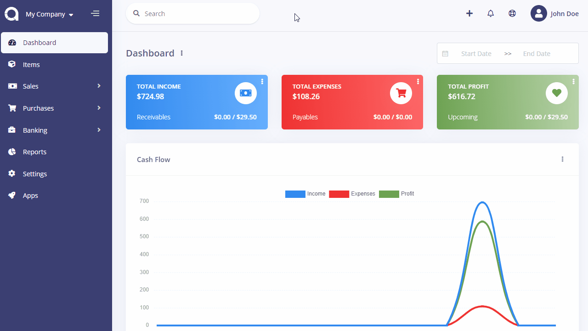

Companies
Company is all where it starts with Doctor Stats and it ships with multi-company feature.
You can manage the money of unlimited companies from one Doctor Stats installation and admin panel. Furthermore, there is no need to login and logout to see that data of different companies, just switch between companies, that's all.
You can switch between companies and manage them from the left top select box.
